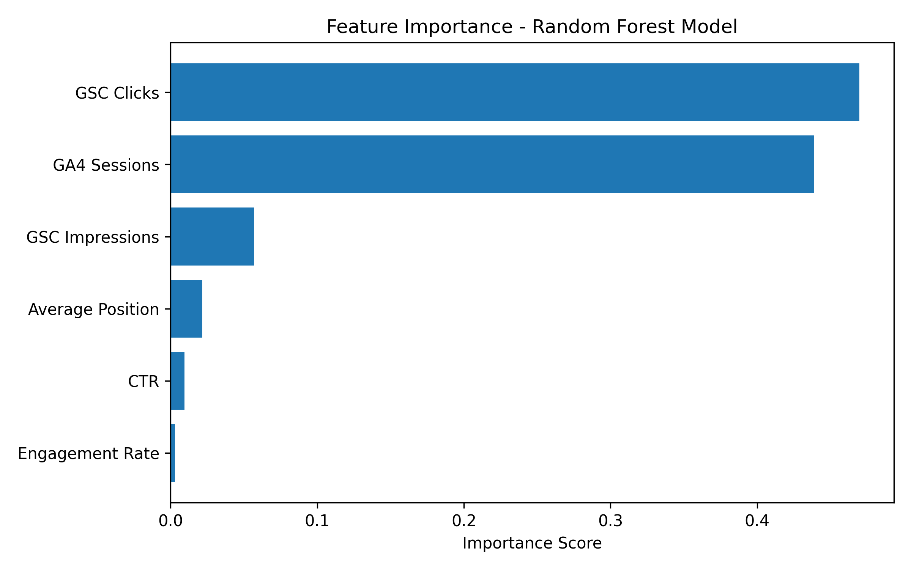
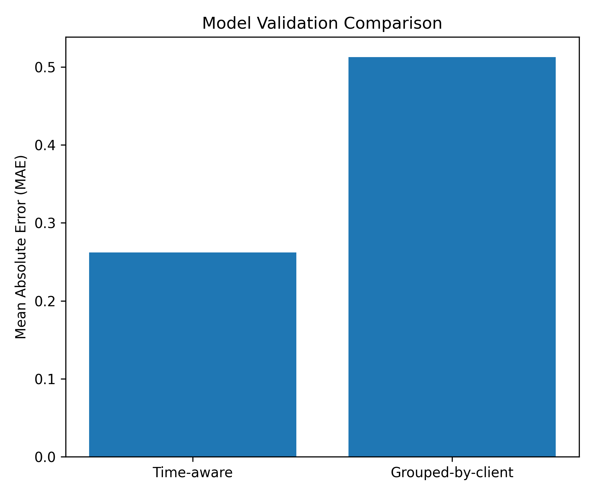
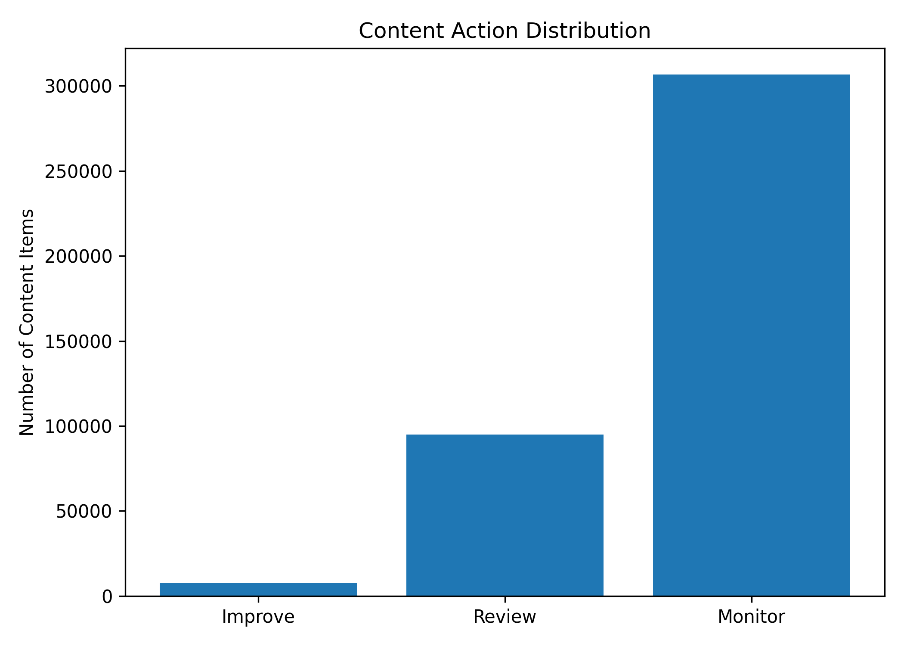
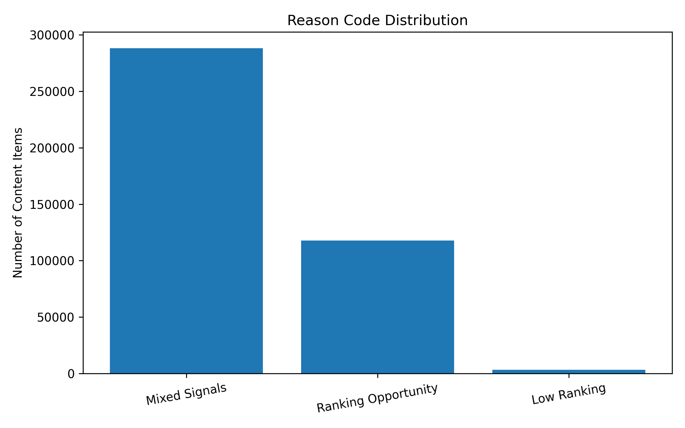

Abstract
This project develops a content opportunity scoring model that helps prioritize which content items should be improved, reviewed, or monitored. A Random Forest Regressor was trained using search performance and engagement features from the FlyRank ML Internship dataset. The model was evaluated using both time-aware and grouped-by-client validation to produce more honest performance estimates. The resulting action playbook ranks content items with clear reason codes that support human decision-making. The findings are intended for decision-support and should not be interpreted as proof of future ranking improvements.
Introduction
Large websites often contain thousands of pages, making it difficult for SEO teams to decide which pages should be updated first. Manual review is time-consuming and inconsistent. This project aims to create a repeatable scoring approach that identifies content requiring attention based on historical search performance.
The research question is:
Which content items should be prioritized for improvement based on historical search performance signals?
The output supports content teams by producing ranked recommendations rather than replacing human judgement.
Dataset
The analysis uses the FlyRank Internship Warehouse dataset from Hugging Face. The work was performed on the fact_content_daily_performance_sample table containing approximately 11.7 million rows covering daily search and engagement metrics between January 2025 and June 2026.
Records with missing target values were removed before training. No client names, domains or private search queries were used during the analysis.
Methodology
Model
A Random Forest Regressor was selected because it can model non-linear relationships between multiple search performance signals while providing feature importance values for interpretation.
Features
- GSC Impressions
- GSC Clicks
- CTR
- Average Position
- GA4 Sessions
- Engagement Rate
Target
The prediction target was the next observation's click count for each content item.
Validation
Model performance was first measured using a time-aware split and then re-evaluated using a grouped client split to reduce information leakage between training and testing data.
Leakage Checks
- No client identifiers were used as model features.
- No label-derived variables were included.
- No overlapping clients existed between training and testing sets.
- Feature importance was reviewed for suspicious behaviour.
Results
The Random Forest model was evaluated using two validation strategies. The time-aware split produced lower prediction errors, while the grouped-by-client split provided a more conservative estimate by testing the model on previously unseen clients.
MAE
0.5129
RMSE
47.09
Queue Size
409,205
Validation
Grouped by Client
| Validation Method | MAE | RMSE |
|---|---|---|
| Time-aware Split | 0.2620 | 2.4575 |
| Grouped-by-client Split | 0.5129 | 47.0867 |
Figure 1 - Feature Importance

GSC Clicks and GA4 Sessions contributed the most to the model, while CTR and Engagement Rate had lower importance scores.
Figure 2 - Validation Comparison

The grouped validation produced higher prediction error, suggesting that it provides a more realistic estimate of performance on unseen clients.
Figure 3 - Action Distribution

Most content items were assigned to the Monitor category, while a smaller number required Review or Improve actions.
Figure 4 - Reason Code Distribution

Mixed Signals was the most common recommendation reason, followed by Ranking Opportunity and Low Ranking.
Ranked Recommendations
- Prioritize pages labelled Improve because they show the strongest opportunity for optimization.
- Review content with mixed performance signals before making changes.
- Continue monitoring stable pages that currently perform well.
- Use the recommendations as decision-support alongside human expertise.
Limitations
This work identifies observed relationships in historical data and does not establish causal effects on search rankings. Results are based on the available dataset and validation strategy and should be used for decision-support rather than as guarantees of future performance.
Reproducibility
All notebooks used in this project are available in the repository under the work/notebooks directory. The complete workflow includes data preparation, model development, validation, leakage checks and creation of the content action playbook.
Acknowledgments
This project was completed as part of the FlyRank Machine Learning Internship and was built using the FlyRank ML Internship dataset.
Data Credit: FlyRank